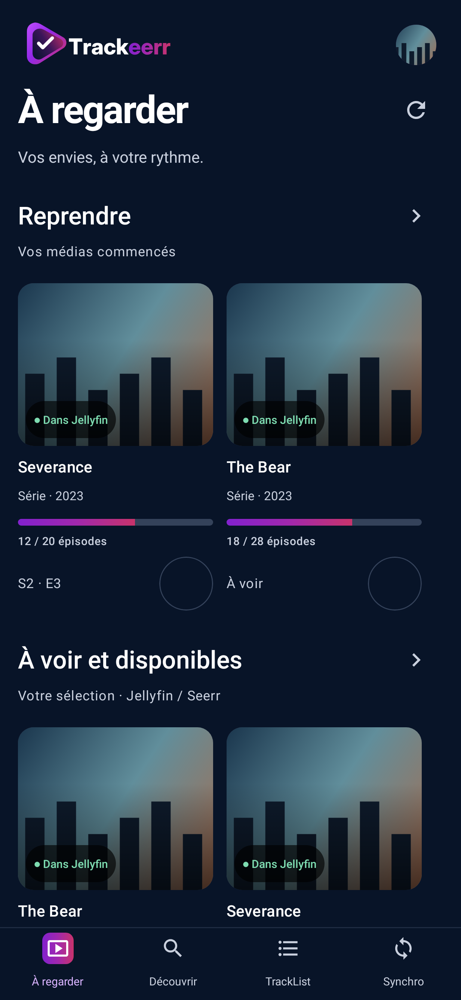
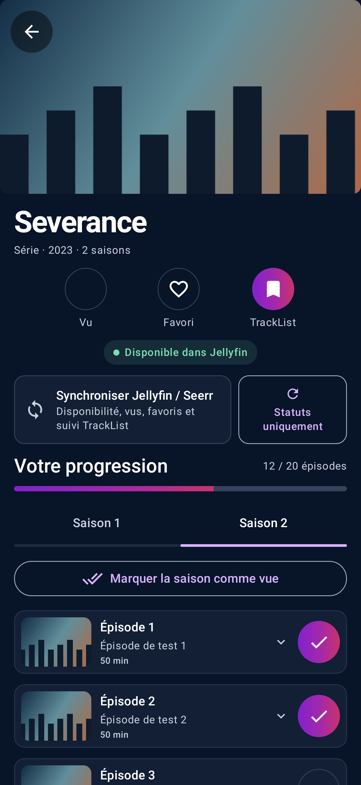
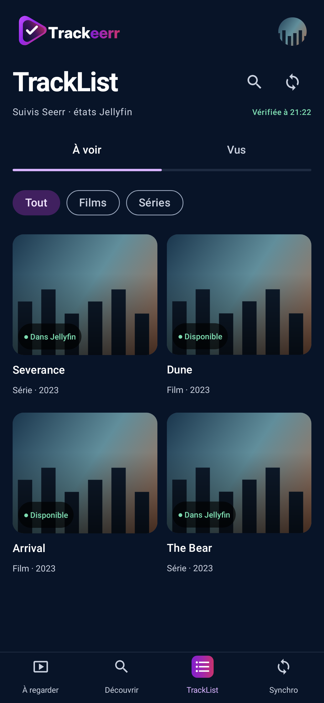

Vos films.
Vos séries.
À votre rythme.
Retrouvez vos suivis, vos favoris et votre progression Jellyfin et Seerr dans une seule application Android.
Gratuit · Android 8.0 et plus · Vos propres serveurs

Tout votre suivi,
au même endroit.
À regarder, déjà vus, favoris : retrouvez le fil de vos envies, du film à l’épisode.
Reprendre le fil
Retrouvez vos médias commencés et leur disponibilité.

Suivre chaque épisode
Résumés, miniatures et progression, saison après saison.

Garder vos envies
Films et séries restent dans votre TrackList, vus ou à voir.
Captures de démonstration de l’application.
Prêt pour votre
prochaine soirée ?
Trackeerr s’installe directement sur votre téléphone Android.
Première version publique
en préparation
Le téléchargement sera disponible après validation sur téléphone.
Télécharger l’APK Voir les versions sur GitHubLes APK seront distribués gratuitement depuis les Releases.
Vérifier le fichier téléchargé
Empreinte SHA-256
Trois étapes, puis à vous de jouer.
Installer l’APK
Téléchargez la version publiée, puis autorisez son installation pour votre navigateur.
Connecter vos services
Renseignez vos adresses Jellyfin et Seerr, puis connectez votre compte Jellyfin.
Retrouver votre suivi
Vos listes et vos états se synchronisent. Vous pouvez aussi importer votre ancien historique.
Avant de
vous lancer.
Quelques réponses pour commencer simplement.
Trackeerr est-elle gratuite ?
Oui. L’APK sera proposé gratuitement, sans abonnement Trackeerr.
Faut-il un serveur Jellyfin et Seerr ?
Oui. Il vous faut un compte Jellyfin et une instance Seerr reliée à ce serveur, avec l’authentification Jellyfin activée. Vous utilisez les adresses fournies par votre administrateur.
L’application fournit-elle des films ou des séries ?
Trackeerr organise le suivi de vos médias et de vos demandes. Elle ne fournit aucun film, aucune série et aucun serveur de streaming.
Puis-je importer mon ancien historique ?
Oui. Dans Profil, un prompt à copier vous aide à faire convertir votre sauvegarde par l’IA de votre choix. Importez ensuite le fichier converti : les états vrais sont conservés, et les films et séries rejoignent votre TrackList. Le bilan signale les titres non identifiés.
Trackeerr ne vous demande aucun compte. Vos identifiants Jellyfin et Seerr se saisissent dans l’application.